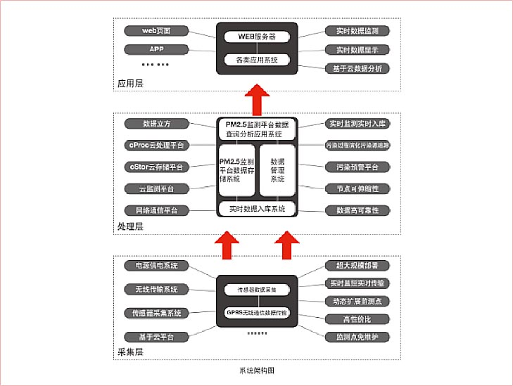

联想环保云 - PM2.5云监测平台方案，是联想基于联想在物联网云计算方面的优势推出的端到端的一体化行业应用解决方案。方案基于收集PM2.5监测仪提供的实时数据，通过建立PM2.5监测数据汇总分析云平台系统分析和处理海量PM2.5数据，通 过多种维度的展现方式从宏观上反映城市的整体的空气质量，并和现有监测站点的监测数据形成互补，为相关政府部门进行 环境监测和污染防治提供全面、实时、准确的环境监测数据和执法依据。
PM2.5云监测节点采集到对应位置的PM2.5,通过无线传输方式传送到数据接收服务器 ，数据经过解析后，通过PM2.5云监测处理平台对海量历史和实时数据的智能分析处理，将实时数据通过Web网页、移动终端展示给最终用户，同时提供预警信息、PM2.5污染传播过程实时演化与污染源追踪功能。为客户科学分析环境污染趋势，为决策和制定行政执法人员最好环境保护的信息化技术支持工作。
联想PM2.5云监测平台系统采用 SOA 面向服务的模型架构，各层相互提供服务支撑能力，并存在递进式的服务关系。整个系统划分为3层8大模块：
（1） 应用层为PM2.5综合展示平台，主要包括PM2.5实时监测与发布模块、PM2.5污染传播过程实时演化与推演模块、PM2.5污染源定位分析模块等多种分析组成，主要实现基于Gis的PM2.5综合应用管理。
（2） 处理层为PM2.5云数据处理平台，主要包括存储模块、数据管理模块、数据分析处理模块，主要实现大数据环境下海量数据的安全存储、数据处理、预警管理和基于污染过程演化与污染源定位算法的大数据分析挖掘；数据分析系统实现了主流的数据挖掘功能，包括属性选择、分类预测、回归预测、聚类分析、关联分析、时间序列分析等6大类。为适应不同业务数据的特点，对同一个数据挖掘功能，通过多种算法进行实现，包括决策树、分类回归树、支撑向量机分类、神经网络分类、贝叶斯网络、朴素贝叶斯、逻辑回归、分类组合模型等算法来协助用户进行综合分析。
（3） 采集层由数据接收服务器和网格化布设的PM2.5云监测仪组成，主要包括PM2.5实时数据采集模块、预处理模块及实时传输模块。该产品测量精准、灵敏度高，可实时提供监测数据；同时数据接收服务器还可接入各类综合数据，以供分析使用。
（1） 数据高效接收存储
前端PM2.5云监测仪发回的原始PM2.5数据，将全部存储在分布式数据库和文件系统中，采用云存储的方式存储海量的数据。为了满足和适应数据量、数据特征和查询处理的不同需求，字典类或管理类数据存储于关系型数据库中
（2）数据实时监测统计
PM2.5数据查询分析应用主要提供基于GIS的PM2.5实时监控、历史记录和数据下载等功能，采用云计算的方式进行数据存储和处理，可实现千亿级海量PM2.5数据实时返回查询结果
（3）实时空气质量预警
可灵活的根据应急预案设置报警阈值，可分为数值超限和增率超限等多种阈值设置，一旦发生报警立即通过邮件，App推送或者短信等形式通知管理者，并提示管理和执法人员所需执行的应急预案
（4）污染传播演化与污染源追踪
依托云计算的分布式存储、分布式数据库、分布式处理和虚拟化技术，进行海量环境数据的挖掘和分析，通过分析大气扩散模型和高斯扩散算法，构建了PM2.5污染传播过程实时演化与污染源定位数学模型，可对多种污染源进行综合分析
（5）综合数据发布
通过环境质量发布平台，可以向相关部门实时提供多维度的综合信息，并可准确提供特定区域的实时的生态环境质量状况。为环保监管和污染防治提供科学依据和行动方向
（1） 测量准确、精度高
产品已通过国家权威部门检验；该产品测量精准、灵敏度高，可实时提供监测数据
（2）支持数以万计监测节点同时上报数据
能够接受每天千亿记录级的海量数据
（3）数据实时采集与传输
产品可满足秒级连续测量需要，测定速度快、自动化程度高，采集时间可以任意设定，采集的数据实时入库，可实时查询。能够对流量超过10000条/秒的全量原始监控数据流进行实时处理
（4）数据管理规模达到十万亿记录级别
云计算架构能够存储管理和处理十万亿记录级别的数据量，完成各种复杂业务应用计算和分析
（5）实时业务处理与预警能力
高效实时数据通道，对于系统中实时监控、告警等实时业务，提供秒级响应时间
（6）布设简单、维护方便
采用太阳能供电和GPRS无线传输系统，且无需专用房间安置，任何地点都可布设，安装简单；传感器1+1冗余，后期维护方便、成本低
（7）超高性价比、大规模部署
产品性能高、价格低，可应用于公共场所、道路、园区、生产车间等不同的监测环境，便于大规模网格化部署，与现有的环境监测点形成有利互补
价格仅为传统监测产品的1/10，部署成本极低
只需部署在离地面1.2-3m高度的电线杆等公共设施上即可，部署方式灵活方便
无需复杂的操作，可以根据用户需求自动进行增加设备，动态增加PM2.5云监测节点，并能自动组网，具有非常强大的扩容性
运用云计算技术实现空气污染状况实时精确呈现，秒级记录分析变化走势。采集时间可以任意设定，采集的数据实时入库，可实时查询
自定义空气质量变化预警阈值，当空气污染值突然飙高，监测地图预警灯不断闪烁，推演污染过程
通过平台监测数据，快速发现污染源，及时进行执法管制
通过部署联想PM2.5云监测平台，配合城市现有的环境监测站点，准确、及时、全面地反映环境质量现状及发展趋势，为环境管理、污染源控制、环境规划等提供科学依据，并结合天气状况、城市交通、人口密度、工业产值等元素，进行系统的研究，为保护环境，改善城市的大气环境质量改善起到技术支撑作用。具体可归纳为:
（1）根据环境质量标准，评价环境质量。
（2）根据污染分布情况，追踪寻找污染源，为实现监督管理、控制污染提供依据。
（3）构建云计算海量数据处理平台，存储本区域海量数据，积累长期监测资料，为研究环境容量、实施总量控制、目标管理、预测预报环境质量提供数据。
（4）为保护人类健康、保护环境、合理使用自然资源、制订环境法规、标准、规划等服务。
（1）城市整体空气质量监控：通过在城市各个重点区域布设PM2.5监测点，既可以从宏观上反映城市的整体的空气质量，也可以从微观上实时反映局部区域、特定区域的空气质量的好坏。可以准确、及时、全面地反映城市环境质量现状及发展趋势，为环境管理、污染源控制、环境规划等提供科学依据。
（2）面源（开放源）的监控与执法： 联想PM2.5云监测仪性价比高、部署灵活方便，通过对整个城市的建筑工地、露天工程场所部署PM2.5监测点，采用随有随装的方式，结合PM2.5云监测平台整体管理监控建筑工地的环保措施防护效果。环保及相关负责部门可以有效的根据监测结果对未达标的工程场所进行定向快速执法。
（3）主干道路（环路）尾气污染监测：通过在城市主要道路，环路部署PM2.5监测点，可以从整体上实时监测道路尾气污染状况。并可从侧面体现城市道路拥堵现状。云处理平台存储本区域海量数据，积累长期监测资料，为相关负责部门研究环境容量、实施总量控制、目标管理以及制定城市发展规划提供科学依据。
（4）城市保洁整体监控： 城市主干道路，或是核心地区部署PM2.5监测点，由于传统城市道路保洁线将主干道划分成不同责任路段，通过PM2.5监测，可以有效管控和区分同一条主干道路上不同区域的环境及绿化差异。相关负责单位环保局可以有效的对各个分管区县的道路保洁掌握和评比管理。
（5）移动环保监测车：联想PM2.5监测点部署方便，可以部署在移动车辆中，可根据环保部门要求对临时、移动的污染源进行现场监控和相关执法督察。